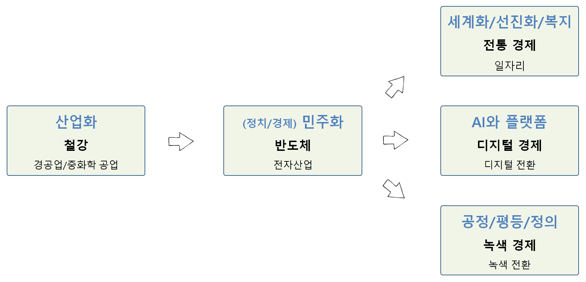

Chapter 1 시대정신

1.1 역대 대선의 시대정신과 승패요인12
| 대선 | 시대정신 | 대선승패 결정적 요인(이슈) | 추진 공약 |
|---|---|---|---|
| 1987년 | 민주화운동, 군정종식 | 야권 후보 분열, 지역대결 | . |
| 1992년 | 문민정부 | 지역 대결 | 문민정부(김영삼) |
| 1997년 | 수평적 정권교체 | DJP 연합, 병풍 | IMF 극복(김대중) |
| 2002년 | 탈권위, 지역주의 청산 | 대선후보 단일화, 행정수도 이전 제2의 병풍 | 정치 개혁(노무현) |
| 2007년 | 10년 좌파정권 심판, 경제살리기(성장경제) | 전 정권에 대한 민심이반, 경제이슈 부상 | 경제성장(이명박) |
| 2012년 | 복지국가,경제민주화,통합 | 국정원댓글, 이정희 | 국민행복(박근혜) |
| 2017년 | 적폐청산, 새로운 대한민국 | 국정농단, 탄핵 | 정의 (문재인) |
| 2022년 | 불평등, 불안 | 부동산(양극화), AI와 플랫폼, 출산율 | 기본사회(이재명) |
산업화 → 민주화 → ???
세계화, 선진화, 복지국가,
1.2 역대 대선 시대정신
| 대선 | 보수 | 중도 | 진보 |
|---|---|---|---|
| 15대(1997) | 3김 청산 | 국난극복, 햇볕정책, 제2의 건국 | |
| IMF | (이회창) | (김대중) | |
| 16대(2002) | 병풍 | 행정수도, 개헌, 노사모 | |
| 경제 | (이회창) | (노무현) | |
| 17대(2007) | 경제, 정권교체 | 부패척결 | |
| 경제 | (이명박) | (정동영) | |
| 18대(2012) | 여성대통령/경제민주화 | 새정치 | 사람이 먼저다 |
| 경제 | (박근혜) | (안철수) | (문재인) |
| 19대(2017) | 대란대치3 | 정의/공정과 미래 | 나라를 나라답게/정의 |
| 정의 | (홍준표) | (유승민/안철수) | (문재인/심상정) |
| 20대(2022) | ??? | ??? | 기본사회/???/??? |
| 정의 | (윤석렬) | (???) | (이재명/이낙연/정세균) |
1.3 2017년 대선 시대정신
1.3.1 리얼미터
매경, 유승민보다 보수적인 안철수…대선 시대정신은 ‘정의’에 따르면 정의(34.9%)와 형평(17.7%)을 강조한 문재인 후보가 통합(11.6%)과 안보(8.2%)를 강조한 반기문 후보보다 더 높은 지지율을 받고 있는 이유를 시대정신 키워드 선점을 통해 설명하고 있다.
- 정의: 34.9%
- 형평: 17.7%
- 통합: 11.6%
- 민주: 11.3%
- 안보: 8.2%
대란대치(大亂大治)는 경제대란, 외교안보대란이라는 큰 혼란을 큰 정치로 다스린다는 의미다.↩︎